올리브영 판매 랭킹 결정요인 실증 분석 1차 보고서 — 데이터 구축 및 탐색적 분석 (개정판)
핵심 결론 (2026-08-18 기준)
- Q1 유입 속도 — 규모와 분리해도 살아남는다. 규모를 통제한 잔차화 속도가 카테고리 패널에서 유의하며, 랭킹은 판매액이 아니라 판매량에 가깝게 집계되는 것으로 판별됐다.
- Q2 체험단 — 탐지 규칙 재설계로 검증 가능 구간 진입. 티어 기반 규칙이 수동 검증에서 정밀도 100%·재현율 94%를 기록했다.
- Q3 규모 vs 평점 — 규모의 승리. 브랜드 고정효과와 상품 클러스터 표준오차를 적용한 뒤에도 리뷰 규모는 유의하나, 평점은 천장효과로 설명력이 없다.
- 순위보다 잔류가 더 잘 설명된다. 익일 잔류 로지스틱의 pseudo-R²가 0.206으로 순위 회귀(within R²≈0.07)를 크게 앞선다.
1분석 개요
1.1 분석 배경 및 문제 제기
올리브영은 국내 H&B 유통의 사실상 표준 채널이며, 판매 랭킹은 소비자의 탐색 진입점이자 브랜드 마케팅의 핵심 성과 지표로 기능한다. 랭킹 상위 노출은 추가 판매를 낳고, 판매는 다시 리뷰를 축적시켜 노출을 강화하는 피드백 구조가 존재할 것으로 추정되지만, 랭킹 산정 방식은 공개되어 있지 않다. 한편 업계에서는 체험단·리뷰 이벤트를 통한 리뷰 부양이 관행화되어 있어, 리뷰 지표가 순수한 수요 신호인지에 대한 의문도 제기된다.
현재까지 이 주제에 대한 논의는 대부분 경험칙에 의존하며, 상품 단위 데이터로 다음 질문을 검증한 사례는 찾기 어렵다. 첫째, 리뷰의 축적 규모 와 유입 속도 중 무엇이 현재 랭킹과 더 강하게 연관되는가. 둘째, 체험단 등 대가성 리뷰의 비중 이 높은 상품이 실제로 랭킹에서 유리한가. 본 프로젝트는 이를 검증하기 위해 랭킹·리뷰·이미지를 매일 수집하는 자체 파이프라인을 구축하였고, 본 보고서는 그 1차 산출물로서 데이터 구축 과정과 탐색적 분석(EDA) 결과를 정리한다. 본 개정판은 8/5부터 정착된 전 카테고리 일일 수집으로 확보한 카테고리 패널(6일 × 20개 카테고리 × 100위) 을 반영해 핵심 검정을 갱신하였다.
1.2 분석 목적
본 분석의 최종 목표는 "리뷰 축적 패턴과 체험단 비중이 현재 랭킹을 얼마나 설명하는가"를 상품 단위 크로스섹션·패널 데이터로 검증하는 것이다. 구체적 연구 질문은 다음 세 가지다.
- Q1 (유입 속도). 최근 리뷰가 몰린 상품일수록 랭킹이 높은가 — 리뷰 유입 속도와 순위의 연관을 측정한다.
- Q2 (체험단). 체험단 비중이 높은 상품이 랭킹에서 유리한가, 아니면 별점만 부풀릴 뿐 랭킹과는 무관한가.
- Q3 (규모 vs 평점). 리뷰 수와 평점 중 무엇이 랭킹 설명력이 높은가 — 변수군별 설명력을 분해 비교한다.
아울러 랭킹 썸네일 이미지를 함께 아카이빙하고 있어, 상위권 썸네일의 시각적 문법(밝기·채도· 프로모션 텍스트)이 존재하는지를 부가 질문으로 탐색한다. 단, 랭킹 상위 표본은 절단 표본이며 역인과 (상위 노출 → 리뷰 증가) 경로가 존재하므로, 본 보고서의 모든 결과는 인과가 아닌 연관성·설명력 으로 해석한다. 또한 본 개정판 4.4.5에서 랭킹이 판매액(매출)순에 가깝다는 점을 확인하였으므로, 순위는 설명 대상인 동시에 우리가 확보한 유일한 판매 관측 대리변수로 취급한다.
2분석 대상 데이터
2.1 데이터 수집 대상
공식 오픈 API가 존재하지 않으므로, 웹/모바일 서비스가 사용하는 비공개 엔드포인트를 식별하여 수집 대상으로 삼았다.
| 구분 | 데이터 | 수집 방법 / 엔드포인트 | 활용 목적 |
|---|---|---|---|
| 필수 | 판매 랭킹 TOP100 (전체+21개 카테고리) | getBestList.do 서버렌더링 HTML 파싱 | 종속변수(순위), 가격·할인·프로모션 배지 |
| 필수 | 상품별 리뷰 통계 | 리뷰 stats API (리뷰수·평균별점·별점분포) | 리뷰 규모·평점 변수, 리뷰 유입 속도 산출 |
| 필수 | 리뷰 목록 (본문 포함) | 리뷰 cursor API (페이지네이션) | 리뷰 구성·체험단 신호·작성일 분석 |
| 보조 | 상품 대표 이미지 | 이미지 CDN 다운로드 (URL 해시 아카이빙) | 썸네일 시각 특성 분석 |
표 1. 데이터 수집 대상
2.2 데이터 수집 범위 및 기간
| 구분 | 수집 범위 / 기준 |
|---|---|
| 수집 기간 | 2026-07-21 ~ 08-09 (16개 수집일 · 결측 7/24–26, 8/2) |
| 랭킹 범위 | 전체 TOP100 매일 · 21개 카테고리×100위 일일 수집 (8/3 첫 수집, 8/5부터 매일 정착) |
| 리뷰 범위 | 전체 TOP100 상품의 신규 리뷰 증분 + 백필 · 카테고리 상품은 리뷰 통계만 |
| 수집 시각 | 매일 KST 10:00 (Windows 작업 스케줄러) |
| 누적 규모 | 유니크 상품 3,813개 · 유니크 리뷰 66,189건 · 썸네일 1,004장 · 카테고리 패널 12,000관측 |
표 2. 데이터 수집 범위 (2026-08-09 기준 누적)
2.3 데이터 명세
| 파일 | 단위 | 주요 컬럼 |
|---|---|---|
| YYYY-MM-DD_ranking.csv | 상품×카테고리×일 | 순위, 브랜드, 상품명, 정가/혜택가/할인율, 리뷰수, 리뷰별점, 별점1~5비율, 세일/쿠폰/증정/오늘드림, 상품번호, 대표이미지URL |
| YYYY-MM-DD_reviews.csv | 리뷰 1건 | 리뷰ID, 작성일, 별점, 리뷰타입, 체험단여부, 피부타입/톤/고민, 도움수, 포토여부, 재구매, 리뷰본문 |
| backfill/top100_reviews.csv | 리뷰 1건 | 동일 스키마의 과거 리뷰 일괄 수집분 |
| images/*.jpg·png | 이미지 1장 | 파일명 = md5(대표이미지URL) 상위 16자리 — URL 변경(썸네일 교체) 이력 보존 |
표 3. 수집 파일 명세 (CSV: utf-8-sig, 일자별 파일 분리)
2.4 수집 파이프라인 설계
수집기는 Python으로 구현하였으며, 다음 설계 원칙을 따른다.
- 가정용 PC에서 실행. 대상 서버가 Cloudflare로 데이터센터 IP를 차단하므로 클라우드가 아닌 로컬 PC에서 매일 10시에 스케줄 실행하고, 결과 CSV를 GitHub 저장소로 푸시한다. TLS 핑거프린트 임퍼서네이션(curl_cffi)으로 일반 브라우저와 동일한 시그니처를 유지한다.
- 정중한 수집(politeness). 호스트별 최소 요청 간격(랭킹 8.0초, 리뷰 API 1.3초, 이미지 CDN 0.3초)을 강제하고, HTTP 429 수신 시 15초×n(최대 120초) 지수 백오프, 연속 실패 시 쿨다운을 적용한다.
- 중단 내구성. 진행 상태를 체크포인트(JSON)로 저장하여 데드라인 도달·오류 중단 후 재실행하면 완료 지점부터 이어서 수집한다. 리뷰는 수집 즉시 CSV에 append+fsync하여 유실을 방지한다.
- 중복 회피. 리뷰는 상품별 기수집 리뷰ID 커서로 신규분만 수집하고, 이미지는 URL 해시 파일명으로 중복 다운로드를 차단한다. 이미지 파일명이 URL에 결정적으로 대응되므로 썸네일 교체 이력이 자동 보존된다.
- 실행 시간 관리. 전 카테고리 수집 시 리뷰 본문까지 걷으면 8시간을 초과함을 확인하여, 카테고리 상품은 랭킹+리뷰 통계만 수집하고 리뷰 본문은 전체 TOP100 상품으로 한정하는 모드 (--review-text-overall-only)를 도입했다. 8/5부터 이 모드로 매일 1~2시간 내에 전 카테고리를 수집하고 있다.
2.5 API 실측으로 확인된 수집 한계
수집 과정에서 API의 문서화되지 않은 동작을 실측으로 확인하였고, 이는 변수 설계에 직접 반영되었다.
| 항목 | 실측 내용 | 분석 상의 처리 |
|---|---|---|
| 리뷰 정렬 | cursor API가 sort:RECENT 요청을 무시하고 도움순 고정 반환 | 리뷰 표본을 '노출면(도움순 상위) 표본'으로 재정의 |
| 페이지 크기 | pageSize=20 요청에도 페이지당 10건 반환 → 첫 수집 상품당 30건 절단 | 유입 속도는 리뷰 표본 대신 랭킹 CSV의 일별 총리뷰수 증분으로 산출 |
| 체험단 표시 | API에 체험단 필드 없음 — 본문 표기 문구로만 추정 가능 | 키워드 재계산(하한 추정치), LLM 분류 고도화 예정 |
| 수집 결측 | 7/24–26(PC 미가동), 8/2(랭킹 단계 실패) | 차분 계산 시 경과일로 정규화 |
| 스키마 드리프트 | 7/21–22 파일에 대표이미지URL 컬럼 부재 | 전처리에서 컬럼 유무 허용 |
표 4. 실측으로 확인된 수집 한계와 대응
3개발 환경
수집·분석 모두 Python 3.11 이상을 사용한다. 수집기는 Windows(작업 스케줄러)와 macOS/Linux(cron)에서 동일하게 동작하도록 셸/PowerShell 러너를 제공하며, 분석 코드는 저장소의 analysis/ 모듈로 재현 가능하다. 정적 결과물은 GitHub Actions가 CSV를 JSON으로 가공하여 GitHub Pages로 배포한다.
| 구분 | 도구 | 용도 |
|---|---|---|
| 수집 | curl_cffi | TLS 핑거프린트 임퍼서네이션 (Cloudflare 통과) |
| 수집 | BeautifulSoup4 + lxml | 랭킹 HTML 파싱 |
| 수집 | Playwright | cf_clearance 쿠키 폴백 발급 |
| 분석 | pandas · numpy | 전처리, 상관/회귀, 지표 산출 |
| 분석 | Pillow | 썸네일 저수준 특성 추출 |
| 시각화 | 순수 SVG/JS (라이브러리 무의존) | 본 보고서의 인터랙티브 차트 |
표 5. 핵심 활용 라이브러리
4분석 방안 및 결과
4.1 데이터 전처리 및 변수 정의
전처리는 다음 순서로 수행한다. (i) 일자별 리뷰 파일과 백필을 병합한 뒤 (상품번호, 리뷰ID) 기준 중복 제거. (ii) 체험단여부 컬럼은 수집 시기별로 판정 규칙이 달랐던 이력이 있어 저장값을 폐기하고 본문 표기 문구 기준으로 재계산한다. (iii) 스키마 드리프트를 허용 병합하고, 카테고리 일일 수집으로 같은 날 같은 상품이 여러 랭킹에 등장하는 중복은 차분 계산 시 (날짜, 상품) 기준으로 제거한다. (iv) 전체 TOP100 상품은 각 시점의 최근 카테고리 랭킹 소속으로 매핑한다(매핑률 92%). 주요 파생변수는 표 6과 같다.
| 변수 | 정의 | 비고 |
|---|---|---|
| velocity_delta | 연속 스냅샷 간 총리뷰수 증가분/일 (경과일 정규화) | 유일하게 표본 편향 없는 유입 속도 지표 — 카테고리 일일 수집으로 상품 약 1,800개까지 확장 |
| velocity_span·recent30_share | 수집 리뷰 작성일 기반 속도/최근성 | 도움순 표본 편향으로 참고용 강등 |
| trial_share | 본문 표기 문구(체험단·협찬·무상제공 등) 매칭 비율 | 하한 추정치, 저장된 플래그는 미사용 |
| log_review_cnt · star1_share 등 | log10(1+리뷰수), 별점분포 비율 | stats API 전수 기준 |
| 카테고리 매핑 | 전체 TOP100 상품번호 → 해당 시점 최근 카테고리 랭킹 소속 | 매핑률 92% |
| 이미지 특성 | 밝기·채도·colorfulness·흰테두리비율·엣지밀도 | Hasler-Süsstrunk(2003) 등 저수준 지표 |
표 6. 주요 파생변수 정의
4.2 기초 현황: 랭킹의 변동성
랭킹 분석의 전제로 종속변수인 순위 자체의 안정성을 진단하였다. 16일 관측 결과 전체 TOP100은 매일 평균 42개 상품이 교체되는 고변동 리스트 였다. 특히 8/1에는 100개 중 70개가 신규 진입하였는데, 이는 월초 프로모션 개편 주기와 겹친다. 살아남은 상품 사이에서도 전일 대비 순위 상관(Spearman ρ)은 0.18~0.78을 오갔다(그림 2). 즉 순위는 일 단위로 강하게 재배열되며, 월초에는 사실상 리셋된다.
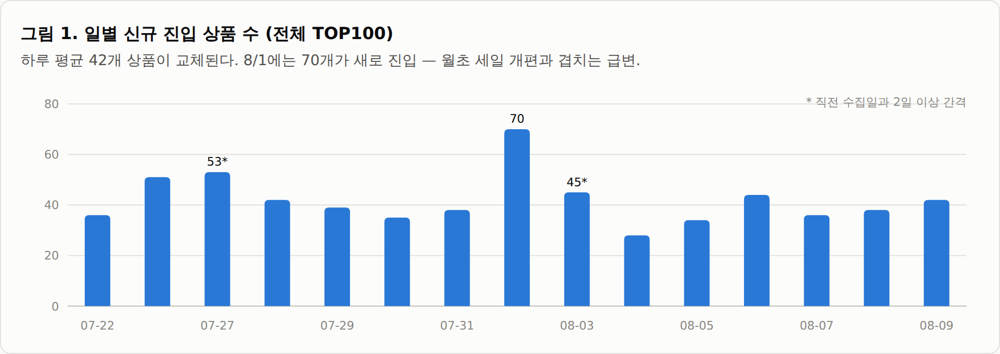
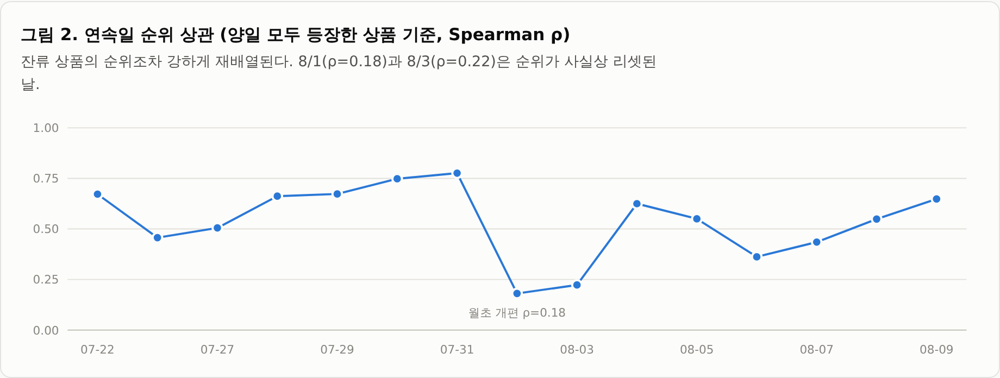
순위 구간별로는 위계가 뚜렷하다. 1–10위 상품의 익일 잔류율은 70%인 반면 61–100위는 49%로, 하위권일수록 이탈 위험이 크다. 잔류하더라도 평균 15~23계단을 이동한다(그림 3). 8/9 기준 TOP10 상품의 기간 내 궤적(그림 4)을 보면, 현재 최상위 상품 다수가 기간 중 50위 밖을 다녀왔다.
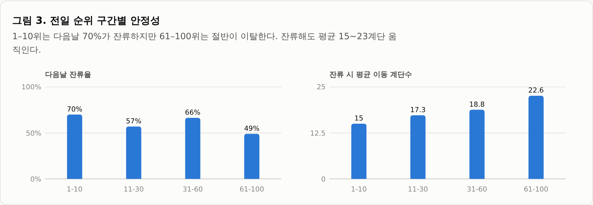
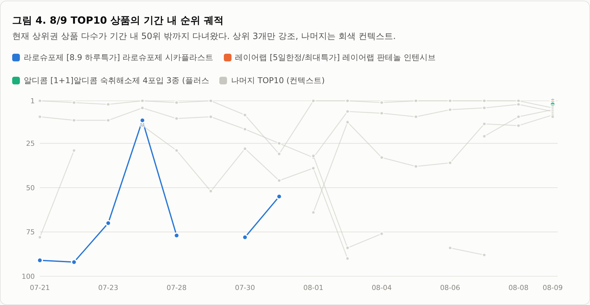
4.2.1 신규 진입 상품의 특성
신규 진입 상품 631건과 잔류 상품 869건을 비교하면(표 7), 신규 진입 상품의 중위 누적 리뷰수는 5,775건으로 잔류 상품(17,595건)의 3분의 1 수준이다. 즉 리뷰 자산이 작은 상품도 끊임없이 리스트에 진입 하며, 진입 지점은 49%가 61–100위 구간이고 TOP10 직행은 7.4%에 불과하다. 할인율·증정 여부는 두 집단 간 차이가 거의 없어, 진입 자체를 가르는 것은 프로모션 강도보다는 단기 판매 모멘텀으로 추정된다.
| 구분 | 관측 수 | 평균 순위 | 중위 순위 | 중위 리뷰수 | 평균 할인율(%) | 증정 비율 |
|---|---|---|---|---|---|---|
| 잔류 상품(전일에도 등장) | 869 | 46.68 | 45 | 17,595 | 26.41 | 0.47 |
| 신규 진입 상품 | 631 | 55.76 | 60 | 5,775 | 26.07 | 0.4 |
표 7. 신규 진입 vs 잔류 상품 특성 비교 (15개 전이일 합산)
4.3 TOP100의 구성: 카테고리와 브랜드
전체 TOP100 슬롯(상품×일, 16일 누적 1,600개)을 각 시점의 카테고리 랭킹 소속으로 매핑했다(매핑률 92%). 슬롯 수로는 메이크업(19.8%)과 스킨케어(15.9%) 가 최대지만, 1~10위 구간만 보면 순서가 뒤집힌다 . 마스크팩이 22.5%(전 구간 대비 1.7배), 푸드가 12.5%(2.6배)로 과대대표되고 메이크업은 8.1%로 급감한다(그림 5). 메이크업은 많은 상품이 넓게 걸치는 카테고리, 마스크팩·푸드는 소수 상품이 최상위에 꽂히는 카테고리다.
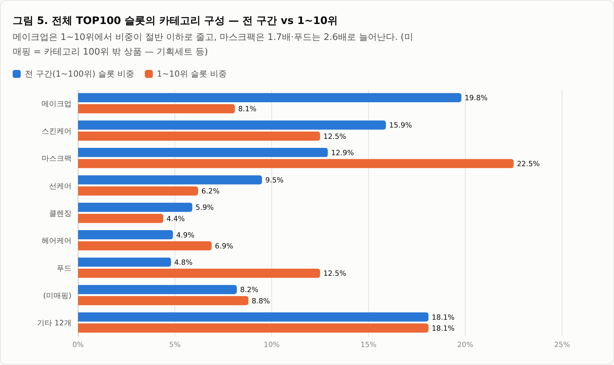
카테고리 간 이질성도 크다(표 9). 8/9 카테고리 랭킹 기준 중위 리뷰수는 메이크업 13,775건에서 홈리빙·취미류의 두 자릿수까지 갈리고, 세일 배지 비율도 카테고리별로 크게 다르다. 비(非)뷰티 카테고리는 리뷰 기반 자체가 얇아, 본분석에서는 뷰티 카테고리와 분리 취급이 필요하다.
| 카테고리 | 중위 리뷰수 | 평균 별점 | 중위 혜택가(원) | 평균 할인율(%) | 세일 비율 | 증정 비율 |
|---|---|---|---|---|---|---|
| 메이크업 | 13,775 | 4.75 | 15,710 | 19.13 | 0.79 | 0.39 |
| 마스크팩 | 7,839 | 4.79 | 20,000 | 30.49 | 0.93 | 0.24 |
| 뷰티소품 | 6,237 | 4.79 | 8,500 | 14.03 | 0.6 | 0.22 |
| 클렌징 | 6,141 | 4.82 | 18,750 | 20.56 | 0.82 | 0.33 |
| 스킨케어 | 6,011 | 4.76 | 26,600 | 29.14 | 0.83 | 0.48 |
| 헤어케어 | 5,382 | 4.79 | 23,350 | 21.77 | 0.88 | 0.11 |
| 바디케어 | 4,700 | 4.82 | 16,265 | 20.83 | 0.86 | 0.2 |
| 위생용품 | 4,536 | 4.84 | 8,450 | 20.85 | 0.56 | 0.2 |
| 건강식품 | 4,210 | 4.78 | 17,790 | 23.69 | 0.79 | 0.09 |
| 더모 코스메틱 | 3,334 | 4.81 | 29,555 | 22.22 | 0.84 | 0.38 |
| 선케어 | 3,322 | 4.79 | 19,450 | 26.3 | 0.92 | 0.28 |
| 구강용품 | 3,317 | 4.78 | 9,940 | 17.64 | 0.86 | 0.22 |
| 푸드 | 2,733 | 4.71 | 4,950 | 13.45 | 0.44 | 0.04 |
| 헬스/건강용품 | 1,455 | 4.77 | 14,900 | 13.72 | 0.73 | 0.02 |
| 맨즈에딧 | 1,140 | 4.83 | 22,450 | 20.71 | 0.79 | 0.24 |
| 네일 | 901 | 4.63 | 10,850 | 11.08 | 0.63 | 0.16 |
| 향수/디퓨저 | 685 | 4.66 | 34,200 | 18.0 | 0.81 | 0.26 |
| 패션 | 167 | 4.32 | 19,400 | 14.91 | 0.45 | 0.0 |
| 홈리빙/가전 | 30 | 4.01 | 29,750 | 17.83 | 0.29 | 0.0 |
| 취미/팬시 | 12 | 3.97 | 26,900 | 8.52 | 0.18 | 0.0 |
표 9. 카테고리별 기초 통계 (8/9, 카테고리당 TOP100 기준)
4.3.1 상시 랭커 브랜드의 특징
16일 중 13일 이상 등장한 브랜드는 전체 252개 중 31개(12%)에 불과하나 이들이 슬롯의 48%를 차지한다(반대로 138개 브랜드는 1~2일 등장 후 사라진다). 상시 브랜드는 각자 하나의 주력 카테고리에 전문화 되어 있으며(그림 6), 생존 방식은 두 전형으로 갈린다. 메디힐(상품 10개·107슬롯)·아누아(11개)처럼 여러 상품을 회전시키는 포트폴리오형 과, 단일 상품으로 전 기간 체류하는 히어로 상품형 이다. 인지도 경로도 이원화되어 있다 — 딜라이트 프로젝트(중위 리뷰 14.7만)·홀리카홀리카 같은 리뷰 자산형과, 리뷰 자산 없이 높은 할인·신제품 회전으로 체류하는 신흥형(아누아 평균 할인율 52%)이 공존한다. 상시 브랜드 상품명에는 "1위·올영픽·1+1·단독기획·연예인 PICK" 류 클레임이 사실상 표준으로 부착되어 있다.
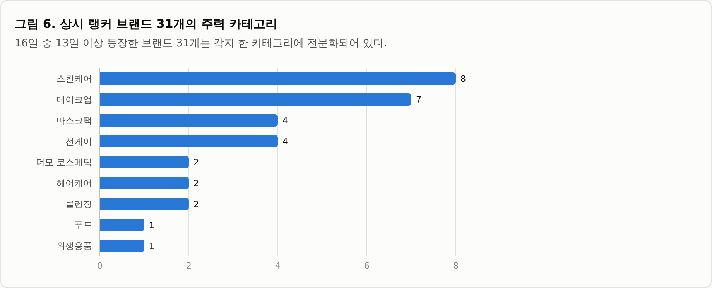
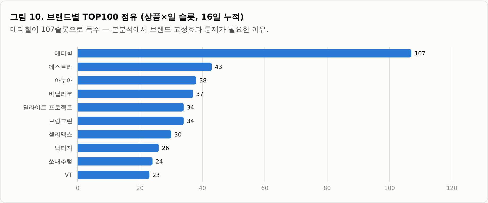
표 8. 상시 랭커 브랜드 상세 (슬롯 수 상위 15개)
아래 표는 등장일수 13일 이상 브랜드를 슬롯 수 기준으로 정렬한 것이다. 전체 31개는 하단에서 펼쳐볼 수 있다.
| 브랜드 | 주력 카테고리 | 등장일(/16) | 슬롯 | 상품 수 | 평균 순위 | 최고 순위 | 중위 리뷰수 | 평균 할인율(%) |
|---|---|---|---|---|---|---|---|---|
| 메디힐 | 마스크팩 | 16 | 107 | 10 | 40.1 | 1 | 48,284 | 38.3 |
| 에스트라 | 더모 코스메틱 | 16 | 43 | 7 | 50.3 | 6 | 12,358 | 21.8 |
| 아누아 | 스킨케어 | 13 | 38 | 11 | 49.3 | 2 | 8,529 | 51.9 |
| 바닐라코 | 메이크업 | 16 | 37 | 5 | 47.9 | 8 | 4,222 | 17.3 |
| 딜라이트 프로젝트 | 푸드 | 16 | 34 | 7 | 41.1 | 1 | 146,988 | 7.1 |
| 브링그린 | 스킨케어 | 15 | 34 | 7 | 46.3 | 3 | 22,242 | 39.5 |
| 셀리맥스 | 스킨케어 | 16 | 30 | 5 | 59.5 | 15 | 1,425 | 29.1 |
| 닥터지 | 스킨케어 | 15 | 26 | 5 | 67.5 | 15 | 9,064 | 26.8 |
| 쏘내추럴 | 메이크업 | 16 | 24 | 3 | 40.5 | 6 | 3,455 | 21.5 |
| VT | 선케어 | 13 | 23 | 4 | 36 | 6 | 6,539 | 36.6 |
| 토니모리 | 메이크업 | 14 | 23 | 3 | 61.4 | 11 | 61,200 | 30.4 |
| 식물나라 | 선케어 | 13 | 22 | 7 | 46.7 | 11 | 12,612 | 39.3 |
| 라운드랩 | 선케어 | 14 | 21 | 6 | 40.1 | 1 | 22,862 | 29.2 |
| 어노브 | 헤어케어 | 15 | 20 | 4 | 29.5 | 4 | 87,560 | 26.4 |
| 셀라딕스 | 스킨케어 | 16 | 19 | 3 | 46.5 | 9 | 3,629 | 12.2 |
4.4 랭킹 설명 요인 분석
4.4.1 리뷰 규모: 카테고리 패널에서의 일관된 설명력
전체 TOP100 내부에서 순위와 리뷰수의 상관은 사실상 0이다 — "이미 상위 1%만 모인 표본"에서 발생하는 범위 제한(range restriction) 의 산물이다. 반면 카테고리 패널(수집일 6일 × 20개 카테고리)에서는 log(리뷰수)의 6일 평균 상관이 20개 카테고리 전부에서 음수 (값이 클수록 상위권)였다 — 전체 평균 ρ=−0.28, 최강 네일 −0.60, 최약 스킨케어 −0.06(그림 7). 일별 변동 범위(그림 7의 가로선)도 대부분 0 아래에 머물러, 8/3 하루 크로스섹션으로 관측했던 패턴이 6일 연속 안정적으로 재현 됨을 확인했다. 평점의 카테고리 내 상관은 평균 −0.02로 여전히 설명력이 없다.
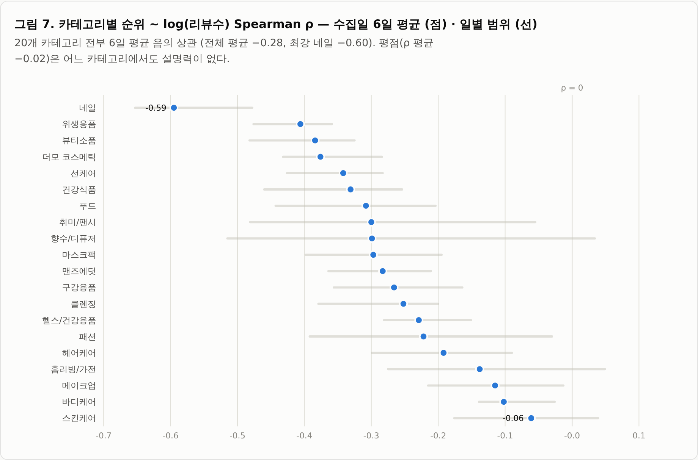
4.4.2 리뷰 유입 속도
유입 속도(velocity_delta)는 이번 개정판의 최대 수혜 변수다. 종전에는 전체 TOP100에 연속 등장한 상품(일 50~70개)만 계산할 수 있었지만, 카테고리 일일 수집으로 표본이 일 약 1,400개 상품 으로 확장되었다. 카테고리 내 순위와의 상관은 5일 연속 ρ=−0.35~−0.41(평균 −0.39) 로 강하고 안정적이며(그림 8), 8/16까지 연장한 10일 패널에서도 평균 −0.38로 동일하게 재현된다 — Q1(“최근 리뷰가 몰린 상품일수록 랭킹이 높은가”)에 대한 강한 긍정 증거다. 전체 TOP100 내 상관(15일 중 13일 음수, 평균 −0.16)은 방향은 같으나 범위 제한으로 크기가 작다. 표 10의 유입 상위 상품들은 실제로 대부분 상위권에 위치한다.
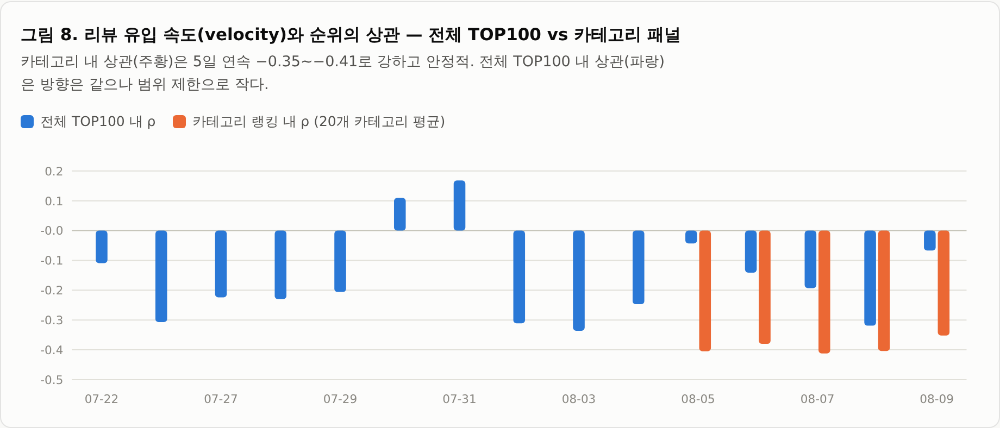
| 8/9 순위 | 브랜드 | 상품명 | 누적 리뷰수 | 리뷰 유입/일 |
|---|---|---|---|---|
| 25 | 웰라쥬 | [8월올영픽] 웰라쥬 리얼 히알루로닉 블루 100 앰플 100ml 기획 (+60… | 17,951 | 1,317 |
| 5 | 메디힐 | [15년 연속 1위] 메디힐 에센셜 마스크팩 10/10+1매 기획 7종 골라담기 | 468,952 | 852 |
| 22 | 메디힐 | [15년연속 1위] 메디힐 에센셜 마스크팩 1매 고기능 7종 골라담기 | 515,983 | 626 |
| 18 | 딜라이트 프로젝트 | [8월올영픽]딜라이트 프로젝트 단백질쉐이크 모음전(1개입/7개입/통) | 148,723 | 416 |
| 34 | 홀리카홀리카 | [NEW젤테일] 홀리카홀리카 마이페이브 피스 아이섀도우/젤테일/피스 빔/피스 밤 | 201,275 | 321 |
| 100 | 플라이밀 | 플라이밀 단백질쉐이크 45g 12종 택 1 | 105,836 | 249 |
| 92 | 롬앤 | [NEW두유코어/1등틴트] 롬앤 더 쥬시 래스팅 틴트 단품/기획 | 264,203 | 247 |
| 38 | 페리페라 | 페리페라 무드 글로이 틴트 27 Colors | 148,727 | 170 |
| 32 | 쏘피 | [8월올영픽]쏘피 쿨링프레쉬 생리대 19종 택 1 (패드/안심숙면팬티/라이너/번… | 52,722 | 164 |
| 29 | 올더베러 | [8월올영픽]올더베러 단백질 쉐이크 45g 6종 택1 | 16,352 | 144 |
표 10. 리뷰 유입 속도 상위 10개 상품 (8/9 기준, 유입/일 = 직전 수집일 대비 총리뷰수 증가분)
다만 이 지표는 척도 선택에 민감하다. 일 유입량의 왜도는 112.9(중위 7건, 평균 18.8건, 최대 21,233건)로 극단적이어서, 원값을 그대로 회귀에 투입하면 소수의 이상치가 추정을 지배해 유의성이 사라진다(t=−1.09). 로그 척도 log(1+유입) 또는 카테고리 내 백분위로 변환해야 안정적인 추정이 가능하다(각각 t=−22.4, t=−22.7). 반대로 당초 대안 지표로 검토했던 성장률(유입÷누적 리뷰수)은 계수 부호가 양(+)이고 유의하지 않아 채택하지 않았다. 이하 유입 속도 관련 추정치는 모두 로그 척도 기준이다.
4.4.3 다변량 분해: 카테고리×일 고정효과 회귀
카테고리 패널 전체(관측 7,090건)에 카테고리×날짜 고정효과를 걸어 — 즉 “같은 날, 같은 카테고리 랭킹 안”의 순위 차이만으로 — 표준화 회귀를 수행하였다(표 11). 리뷰 규모(t=−20.2)와 할인율(t=−8.2)이 유의하게 나타났고, 유입 속도는 누적 규모와의 상관이 높아(유입이 많은 상품이 대개 대형 상품) 규모 통제 시 약화되었다. 평점은 고정효과 모형에서도 설명력이 없으며 부호마저 양(+)으로, 천장효과 하에서 순위를 설명하지 못함이 재확인된다. 다만 표 11의 명세에는 두 가지 한계가 있다. 첫째, 유입 속도가 원값으로 투입되어 4.4.2에서 지적한 이상치 문제를 그대로 안고 있다. 둘째, 같은 상품이 여러 날 반복 등장함에도 표준오차를 보정하지 않아 t값이 부풀려져 있다. 4.4.4에서 두 문제를 교정하면 리뷰 규모에 대한 결론이 뒤집힌다. 평점에 대한 결론(설명력 없음)은 교정 후에도 유지된다.
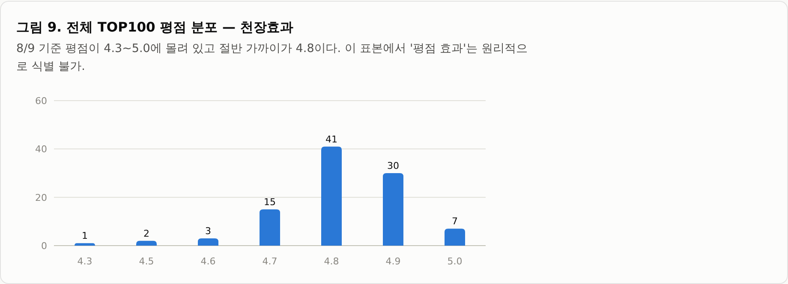
| 변수 | 표준화 계수 | t-통계량 | 해석 |
|---|---|---|---|
| log(리뷰수) | -6.53 | -20.19 | 리뷰 규모가 클수록 상위권 — 매우 유의 |
| 할인율 | -2.58 | -8.16 | 할인이 클수록 상위권 — 매우 유의 |
| 리뷰 유입/일 | -0.47 | -1.49 | 규모 통제 시 약화 (규모와 상관 높음) |
| 평균 별점 | 0.66 | 2.06 | 설명력 없음 (천장효과) |
표 11. 카테고리×일 고정효과 표준화 회귀 — 초판 명세 (8/5~8/9 카테고리 패널, N=7,090, within R²=0.067, 유입 속도 원값 투입·표준오차 미보정)
프로모션 배지를 부연하면, 8/9 전체 TOP100의 부착률은 오늘드림 98%, 세일 84%, 쿠폰 69%, 증정 41%로 프로모션은 사실상 상수에 가깝다. 다만 고정효과 모형의 할인율 계수가 보여주듯, 할인 강도의 차이는 카테고리 안에서 순위와 체계적으로 연관 되어 있다.
4.4.4 규모와 유입 속도의 분리 — 무엇이 남는가
표 11에서 미해결로 남긴 “규모와 속도의 얽힘”을 분리하였다. 패널을 8/16까지 연장하고(20개 카테고리 × 100위 × 10일 = 20,000관측 · 상품 4,634개 · 유입 산출 가능 16,761관측), 유입 속도를 로그 척도로 바꾸고, 같은 상품의 반복 관측을 보정한 상품 단위 클러스터 표준오차를 적용하였다. 8/10·8/11은 카테고리 수집이 실패해 패널에서 제외된다.
| 모형 | 리뷰 규모 t | 유입 속도 t | within R² |
|---|---|---|---|
| M1 규모만 | −16.4 | — | 0.058 |
| M2 유입 속도만 | — | −26.9 | 0.145 |
| M3 규모 + 유입 속도 | −0.0 | −22.4 | 0.145 |
| M4 M3 + 가격·할인·평점·배지 | −0.5 | −22.1 | 0.206 |
표 11-1. 규모–속도 분리 회귀 (8/5~8/16 카테고리 패널, N=16,761, 카테고리×일 고정효과, 상품 단위 클러스터 표준오차 기준 t)
설명력을 분해하면 규모 단독 within R²=0.061, 유입 속도 단독 0.145이며, 둘을 함께 넣어도 0.145로 늘지 않는다. 즉 유입 속도를 아는 상태에서 누적 리뷰 규모가 추가로 설명하는 몫은 0이다. 이는 리뷰수(t) = 리뷰수(t−1) + 경과일 × 유입 이라는 정의상 중첩 탓일 수 있으므로, 규모를 전기(前期) 값으로 바꿔 중첩을 끊고 재추정하였다. 결과는 동일했다(전기 재고 t=−0.16, 고유 ΔR²=0.000). 리뷰 규모 3구간 층화와 10일 일별 재추정에서도 부호와 크기가 유지된다.
다만 이 효과를 “속도”나 “모멘텀”으로 부르는 것은 부정확하다. 오늘 순위와 유입의 상관을 ±3일 시차로 밀어보면 −0.371~−0.398로 평평해 특정 시차에 봉우리가 없고, 같은 상품의 전일 대비 Δ순위와 Δ유입의 상관은 −0.005로 사실상 0이다(N=10,724, Δ순위 표준편차 22.5계단). 즉 이 관계는 날마다의 흐름이 맞물리는 것이 아니라 상품 간 평균 수준의 차이다. “지금 뜨고 있는 상품이 상위권”이 아니라 “평소 유입 수준이 높은 상품이 평소 상위권”으로 읽어야 한다. 따라서 Q3의 답은 다음과 같이 수정된다 — 랭킹을 설명하는 것은 리뷰의 누적 규모가 아니라 최근 유입 수준이며, 규모는 그 대리변수였다. 평점이 설명하지 못한다는 결론은 그대로 유지된다.
4.4.5 랭킹의 정체: 판매액순인가 판매량순인가
4.4.4의 해석은 랭킹이 무엇을 집계한 순위인지에 따라 달라진다. getBestList.do는 “판매랭킹”이며 요청에 기간·정렬 파라미터가 없어 사이트 기본 집계를 그대로 받는다. 집계 기준이 공개되어 있지 않으므로 이를 데이터로 검증하였다. 리뷰는 구매자가 작성하므로 유입은 대체로 판매량에 비례한다. 판매액 = 판매량 × 가격이므로 ln(순위)를 ln(유입)과 ln(혜택가)에 회귀하면, 판매량순이라면 가격 탄력성이 0이어야 하고 판매액순이라면 두 탄력성이 같아야 한다.
| 변수 | 탄력성 | t (클러스터) | 판별 함의 |
|---|---|---|---|
| ln(리뷰 유입) — 판매량 대리 | −0.422 | −20.4 | — |
| ln(혜택가) | −0.359 | −11.5 | 0이 아님 → 판매량순 기각 |
| 탄력성 비 (가격÷유입) | 0.85 | — | 1에 근접 → 판매액순 정합 |
표 11-2. 랭킹 집계 기준 판별 회귀 (8/5~8/16, N=13,961, 종속변수 ln(순위), 카테고리×일 고정효과, 유입 1건/일 이상 관측)
가격 탄력성이 0이라는 가설은 p<0.0001로 기각된다 — 리뷰 유입을 통제한 뒤에도 비쌀수록 상위권이며, 판매량순이라면 나타날 이유가 없는 패턴이다. 두 탄력성의 비는 0.85이고, ln(유입×가격) 하나로 묶은 제약 모형의 설명력 손실은 0.0015에 그친다. 18개 카테고리 전부에서 가격 탄력성이 음수로 재현된다. 따라서 랭킹은 판매액(매출)순에 가깝다고 판단한다.
이 판별은 리뷰 전환율(판매 1건당 리뷰 작성 확률)이 가격대에 따라 체계적으로 다르지 않다는 가정에 의존한다. 고가품일수록 리뷰를 더(또는 덜) 남기는 경향이 있다면 가격 탄력성은 판매액 효과가 아니라 전환율 차이를 포착한다. 가격이 브랜드·품질과 얽혀 있는 점도 브랜드 고정효과 통제를 요구한다. 이 결과는 앞선 분석의 위상을 조정한다 — 순위가 판매액의 관측치라면 “리뷰 유입이 순위를 설명한다”는 상당 부분 “판매가 판매를 설명한다”에 해당한다. 다만 유입이 순위 변동의 15%만 설명하므로 동어반복은 아니며, 리뷰가 판매의 그림자인지 판매를 만드는 요인인지는 현재 설계로 구분되지 않는다.
4.4.6 프로모션의 상품 내 효과와 역인과
리뷰 관련 변수는 상품 내에서 거의 변하지 않아 상품 고정효과 안에서는 식별되지 않는다(4.4.4). 반면 프로모션 배지와 할인율은 날마다 바뀌므로, “같은 상품이 프로모션이 붙은 날과 붙지 않은 날”을 비교하는 상품 내 설계가 가능하다. 상품×카테고리 고정효과와 날짜 고정효과를 동시에 적용하였다.
| 프로모션 | 계수 (ln 순위) | t (클러스터) | 상품 내 변동 단위 |
|---|---|---|---|
| 할인율 (1%p당) | −0.036 | −6.2 | 20.7% |
| 증정 | −0.124 | −3.8 | 8.8% |
| 쿠폰 | −0.042 | −1.0 | 13.7% |
| 세일 | +0.307 | +3.3 | 2.3% |
| 오늘드림 | 추정 불가 | — | 0.1% (3개 단위) |
표 11-3. 프로모션의 상품 내 효과 (8/5~8/16, N=20,000, 상품×카테고리 및 날짜 고정효과, 종속변수 ln(순위), 계수 음수 = 순위 상승)
세일 배지의 계수가 양(+)인 것은 세일이 순위를 떨어뜨린다는 뜻이 아니다. 배지가 새로 부착된 시점 전후의 순위 궤적을 보면 부착 전날 순위가 급락(단위 평균 대비 +0.377)한 뒤 세일이 붙는다 — 순위가 떨어진 상품에 세일을 붙이는 역인과다. 쿠폰은 부착 당일에만 −0.414(순위 약 34% 개선)로 튀었다가 다음 날 소멸하므로, 기간 평균을 내는 회귀에서는 희석되어 무의미하게 보인다. 증정은 지속적 개선을 보이나 부착 이전부터 순위가 나빠지던 추세가 있어 평균회귀와 구분되지 않는다. 할인율이 가장 강하며, 10%p 추가 할인이 순위 약 30% 개선과 연관된다.
프로모션은 무작위로 배정되지 않는다. 세일에서 확인된 역인과는 이후 모든 프로모션 분석에서 사전 추세(pre-trend)를 먼저 확인해야 함을 시사한다. 또한 세일은 상품 내 변동이 있는 단위가 2.3%(113개)에 불과해 좁은 집단에서 얻은 추정이며, 오늘드림은 부착률 90.6%에 변동 단위가 3개뿐이라 추정 자체가 불가능하다. 하루 1회 스냅샷이므로 하루 안의 프로모션 시작·종료는 관측되지 않고, TOP100 밖으로 이탈하면 관측이 끊겨 프로모션 종료 직후의 급락 사례가 표본에서 사라지는 절단 문제도 남는다.
4.4.7 브랜드 통제와 표준오차 보정
4.4.4까지의 회귀에는 두 가지가 빠져 있다. 첫째, 상시 랭커 브랜드가 슬롯의 상당수를 차지하므로 리뷰 효과가 실은 “그 브랜드라서”일 수 있다. 둘째, 같은 상품이 여러 날 반복 등장함에도 표준오차를 보정하지 않아 t값이 부풀려져 있다. 카테고리×일과 브랜드는 서로 포개지지 않는 두 고정효과이므로 교대 사영(alternating projections)으로 동시에 흡수하고, 상품 단위 클러스터 표준오차를 적용하였다. 카테고리 패널의 브랜드는 1,173개이며 상위 10개가 슬롯의 11.1%를 점유한다(4.3.1의 31개·48%는 전체 TOP100 기준 수치다).
| 변수 | 카테고리×일 FE | + 브랜드 FE | 브랜드 통제 후 t(클러스터) |
|---|---|---|---|
| 리뷰 규모 | −0.30 (t=−0.49) | −2.19 | −4.14 |
| 유입 속도 | −12.50 (t=−22.26) | −8.41 | −18.60 |
| 할인율 | +0.95 (t=+1.75) | −1.15 | −2.16 |
| 쿠폰 | −4.03 (t=−9.53) | −3.20 | −8.99 |
| 전체 R² (고정효과 포함) | 0.2199 | 0.3785 | — |
표 11-4. 브랜드 고정효과 추가 전후 (8/5~8/16 카테고리 패널, N=14,920, 표준화 계수, 상품 단위 클러스터 표준오차)
유입 속도는 브랜드를 통제해도 t=−18.6으로 살아남는다 — 브랜드 효과의 대리가 아니다. 반면 리뷰 규모는 브랜드를 통제하면 오히려 되살아난다(t=−0.49 → −4.14). 이는 4.4.4의 결과와 모순이 아니라 층위가 다른 것이다. 브랜드 간 비교에서는 누적 리뷰가 곧 “어느 브랜드인가”의 대리였고, 같은 브랜드 안에서는 누적 리뷰가 많은 상품이 더 상위권이다. 다만 크기는 유입 속도의 26% 수준이고 일별 재추정에서 부호가 3/10일 뒤집혀(음수 비율 70%) 유입 속도만큼 안정적이지 않다. 유입 속도는 10일 전부 음수다. 브랜드 관측수 하한을 1→10→30→60개로 올려도 두 계수가 유지되므로 소표본 브랜드의 과적합은 아니다. 브랜드 자체의 설명력은 커서, 전체 R²를 0.22에서 0.38로 끌어올린다.
| 변수 | t (일반) | t (상품 클러스터) | 축소율 |
|---|---|---|---|
| 유입 속도 | −34.54 | −18.60 | 46% |
| 리뷰 규모 | −8.70 | −4.14 | 52% |
| 할인율 | −4.72 | −2.16 | 54% |
| 가격 | −14.81 | −6.72 | 55% |
| 쿠폰 | −15.46 | −8.99 | 42% |
표 11-5. 표준오차 보정 효과 (표 11-4의 브랜드 통제 사양 기준, 중위 축소율 49%)
t값은 중위 49% 축소된다. 따라서 초판 표 11의 t=−20.2 같은 수치는 보정 없이 산출된 값이므로 그대로 인용해서는 안 된다. 보정 후에도 확실히 유의한 변수는 유입 속도·쿠폰·가격이며, 할인율과 평점 관련 변수는 유의성 경계로 내려온다. 한편 within R²는 브랜드 추가 후 0.2115에서 0.1912로 낮아지는데, 이는 고정효과를 더 흡수하면 분모인 잔여 분산이 줄어 생기는 착시다. 사양 간 비교는 원 순위 분산을 분모로 하는 전체 R²로 해야 한다.
4.4.8 진입·잔류 모형: 순위보다 안정적인 종속변수
랭킹이 하루 평균 42개씩 교체되는 고변동 시스템(4.2)이라면, “몇 위인가”보다 “내일도 남아 있는가”가 더 안정적이고 해석이 명확한 종속변수일 수 있다. 익일 잔류 여부(0/1)를 종속변수로 하는 로지스틱 회귀는 이산시간 위험모형(discrete-time hazard)과 동형이므로 생존분석의 역할도 겸한다. 수집 간격이 1일인 전이만 사용하였다(8/9→8/12 구간 제외). 익일 잔류율은 당일 1~10위 92.5%, 26~50위 78.1%, 76~100위 49.9%로 순위 구간에 따라 뚜렷한 위계를 보인다.
| 변수 | 계수 (1 SD당 로그오즈) | 오즈비 | t (클러스터) |
|---|---|---|---|
| log(순위) | −1.325 | 0.266 | −15.94 |
| 유입 속도 | +0.466 | 1.593 | +6.93 |
| 리뷰 규모 | +0.172 | 1.188 | +3.00 |
| 쿠폰 | +0.158 | 1.171 | +4.10 |
| 세일 | +0.157 | 1.170 | +3.69 |
| 할인율 | −0.134 | 0.874 | −2.97 |
표 11-6. 익일 잔류 로지스틱 (8/5~8/16, N=11,946, 카테고리·날짜 더미 포함, 상품 단위 클러스터 표준오차, McFadden pseudo-R²=0.206). 양수 = 잔류 확률 상승
두 변수의 부호가 순위 회귀와 갈린다는 점이 핵심이다. 첫째, 리뷰 규모는 순위 회귀에서는 유입 속도에 밀려 사라졌지만(4.4.4) 잔류 확률에는 양(+)으로 유의하다(오즈비 1.19). 누적 리뷰는 순위를 올리는 변수가 아니라 자리를 지키게 하는 변수에 가깝다. 둘째, 할인율은 순위 회귀에서 클수록 상위권이었으나 잔류 확률은 오히려 낮춘다(오즈비 0.87). 할인으로 밀어올린 자리는 오래 가지 못한다는 해석이 가능하지만, 할인 종료 시점이 관측되지 않으므로 단정할 수 없다.
| 구분 | 관측 | 중위 순위 | 중위 리뷰수 | 중위 유입/일 |
|---|---|---|---|---|
| 신규 진입 상품 | 4,669 | 71 | 821 | 3.0 |
| 잔류 상품 | 11,331 | 42 | 4,674 | 7.0 |
표 11-7. 신규 진입 vs 잔류 상품 (8/5~8/16 카테고리 패널, 간격 1일 전이 기준)
신규 진입 상품의 중위 누적 리뷰는 821건으로 잔류 상품(4,674건)의 5분의 1 수준이다. 리뷰 자산이 작아도 진입 자체는 끊임없이 일어난다는 4.2.1의 관찰이 카테고리 패널에서도 재현된다. 다만 진입 위치는 43%가 76~100위이고 TOP10 직행은 3%에 그친다. 신규 진입 상품의 Kaplan–Meier 생존곡선을 보면 1일 생존확률 0.403, 3일 0.192로 중위 체류 기간이 1일에 불과하다. 진입 순위가 높을수록 오래 버텨(진입 1~10위의 3일 생존확률 0.311 vs 76~100위 0.161), 진입 지점 자체가 이후 체류를 강하게 예측한다. 이 곡선은 관측 시작 시점에 이미 진행 중이던 체류를 제외했으므로(좌측 절단) 신규 진입 상품만의 곡선이며, 상시 랭커가 빠져 전체 잔류율 70.8%보다 낮게 나타난다.
종속변수 전환의 타당성에 대해서는 신중할 필요가 있다. 잔류 로지스틱의 McFadden pseudo-R²는 0.206으로 순위 회귀의 within R²(0.067)보다 크지만, 전자는 로그우도 기반이고 후자는 분산 기반이라 두 수치를 같은 척도로 비교할 수 없다. 잔류를 주 종속변수로 검토할 근거는 수치 비교가 아니라 설계상의 장점에 있다 — 0/1 이므로 TOP100 절단 문제에서 자유롭고, 순위처럼 하루 평균 22계단씩 출렁이는 잡음을 타지 않는다. 다만 TOP100 밖은 관측되지 않으므로 여기서의 “이탈”은 소멸이 아니라 절단이며, 패널이 10일이라 생존곡선의 5일 이상 구간은 위험집합이 급감해 불안정하다.
4.4.9 동적 패널: 선후관계 접근 〔잠정〕
⚠ 본 절은 잠정 결과다. 권장 관측 기간은 카테고리 패널 3주치이나 현재는 12일에 그친다. 검정력이 부족하므로 “유의하지 않음”을 “효과 없음”으로 읽어서는 안 되며, 3주치가 확보되는 시점에 재추정할 예정이다.
4.4.8까지의 분석은 모두 동시점 연관이다. 리뷰가 몰린 다음에 순위가 오르는지, 순위가 오른 다음에 리뷰가 몰리는지를 구분해야 Q1 이 인과에 가까워진다. 카테고리별 1일 시차를 붙여 두 방향을 각각 추정하였다. 시차 종속변수를 고정효과와 함께 넣으면 관측 기간이 짧을수록 계수가 음(−)으로 편향되므로(Nickell bias), 시차 종속변수를 포함한 사양과 제외한 사양을 함께 제시한다.
| 사양 | 방향 A: 전기 유입 → 당기 순위 변화 | 방향 B: 전기 순위 → 당기 유입 |
|---|---|---|
| 시차 종속변수 포함 | t = −15.02 | t = −17.70 |
| 시차 종속변수 제외 | t = +1.38 (유의하지 않음) | t = −23.14 |
표 11-8. 동적 패널 양방향 비교 〔잠정〕 (8/5~8/18 카테고리 패널, N=14,711, 카테고리×일 고정효과, 상품 단위 클러스터 표준오차)
방향 A 가 시차 종속변수 포함 사양에서 t=−15.02 로 크게 나타나지만, 이는 Nickell bias 와 평균회귀 흡수의 결과다. 시차 종속변수를 제외하면 t=+1.38 로 유의성이 사라지고 부호마저 반대가 된다. 반면 방향 B 는 두 사양 모두에서 강하게 유의하다. 전기 순위가 좋을수록 당기 리뷰 유입이 증가한다.
랭킹이 판매액순에 가깝다는 4.4.5 의 결과와 합치면, 이 비대칭은 “판매가 리뷰를 만든다”는 방향으로 읽힌다. 4.4.4 에서 유입 수준이 순위를 강하게 설명했던 것은 유입이 판매의 관측 가능한 그림자이기 때문일 수 있으며, 그렇다면 Q1 의 질문 방향 자체를 재설정해야 한다. 다만 아래 세 가지 때문에 확정 결론으로 삼지 않는다.
첫째, 카테고리 패널이 12일로 검정력이 부족하다. 둘째, 리뷰는 구매 시점보다 며칠에서 몇 주 늦게 작성되므로 1일 시차는 실제 선후관계를 포착하기에 짧을 수 있고, 이것이 방향 A 가 약하게 나온 원인일 수 있다. 더 긴 시차를 포함한 재검정이 필요하다. 셋째, 이는 Granger 스타일의 예측 관계이며 인과가 아니다.
4.5 리뷰 데이터 특성과 체험단 신호
수집된 유니크 리뷰 66,189건은 도움순 상위 표본임을 전제로 해석해야 한다(표 4). 이 표본에서 별점 5점 비율은 87.3%, 포토 리뷰 비율은 73.7%로, 소비자가 상품 페이지에서 처음 접하는 노출면은 고평점·포토 리뷰가 지배 한다. 리뷰타입은 NORMAL 73.5%, 오프라인 구매 21.6%로 온라인 구매 리뷰가 다수다.
| 항목 | 값 |
|---|---|
| 별점 5점 비율 | 87.3% |
| 포토 리뷰 비율 | 73.7% |
| 재구매 표시 비율 | 13.1% |
| 리뷰타입 구성 | NORMAL 73.5% · OFFLINE 21.6% · GIFT 4.3% · OL_YOUNG 0.5% |
| 체험단 표기 리뷰 | 222건 (0.34%) — 도브·미쟝센·바세린 등 일부 브랜드 캠페인에 집중 |
표 12. 수집 리뷰 표본(도움순 상위) 기초 통계
체험단 표기 리뷰는 기존 키워드 8개 기준으로 208건(0.33%)에 그쳤다(본 개정판 시점의 유니크 리뷰 63,390건 재집계 기준. 표 12의 222건·0.34%는 초판 집계 시점 값으로 비율은 동일하다). 브랜드별로는 소수 브랜드에 집중되고 작성 시점도 특정 월에 몰려 있어, 특정 브랜드의 캠페인 단위로 발생 하는 패턴이 관찰된다. 이 수치는 본문에 표기 문구를 남긴 리뷰만 포착한 하한 추정치이므로, 탐지 규칙을 다시 설계해 어디까지 끌어올릴 수 있는지를 4.5.1에서 검증하였다.
4.5.1 대가성 리뷰 탐지 규칙의 재설계와 Q2 검증 가능성
기존 8개 키워드는 표기 문구의 일부만 포착한다. 후보 표현의 실제 매칭 문장을 모두 읽고 확인한 결과, 대가성 공시는 세 형태로 나타났다. 단독으로 결정적인 표현, 보상어와 공시어가 가까이 붙을 때만 성립하는 조합, 그리고 문두에서만 유효한 표현이다. 여기에 해시태그·괄호 태그를 위치와 무관한 단정 신호로 별도 처리하고, 반어 표현을 걸러내는 가드를 두어 4단 규칙을 구성하였다.
| 근거 티어 | 판정 조건 | 건수 |
|---|---|---|
| strong | 단독으로 결정적인 표현 37종 (체험단·제공받아·업체로부터·광고주 등) | 444 |
| tag | 해시태그·괄호 태그 (#제품제공, #협찬, #리뷰의무x, [제품제공사용리뷰]) — 위치 무관 | 5 |
| combo | 보상어와 공시어가 ±50자 안에 인접할 때만 인정 | 35 |
| head | 문두 40자 안에서만 유효 (할인받아 계열) | 5 |
| 합계 | 탐지율 0.77% (기존 8개 키워드 208건·0.33% 대비 2.35배) | 489 |
표 12-1. 대가성 리뷰 탐지 규칙의 근거 티어별 구성 (유니크 리뷰 63,390건 기준, 본 개정판 시점 재집계)
규칙 설계에서 실제로 중요했던 것은 무엇을 제외했는가다. 빈번하지만 단독으로는 판정할 수 없는 표현들을 표 12-2와 같이 처리했다.
| 표현 | 매칭 | 처리 |
|---|---|---|
| 광고 | 410건 | 제외 — 대부분 “광고 보고 샀어요”. “광고주”로 한정 |
| 솔직한 후기 | 215건 | 단독 제외 — 일반 리뷰의 상투어. 보상어와 인접할 때만 인정 |
| 할인받아 | 22건 | 문두에서만 인정 — 22건 중 5건만 실제 공시 |
| #리뷰의무x | 2건 | 포함 — 제품을 받았을 때만 성립하는 표현 |
| 협찬받고싶은 / 협찬도 아니고 | 2건 | 제외(반어) — 단 “체험단 아니었으면”은 수령을 뜻하므로 유지 |
표 12-2. 단독 판정이 불가능한 표현의 처리. 공시 문구는 88.1%가 본문 앞 10% 이내에 위치하며, 이것이 문두 조건의 근거다.
| 층 | 정의 | 모집단 | 표본 | 실제 대가성 |
|---|---|---|---|---|
| A | 기존 규칙이 탐지한 것 | 481 | 60 | 60 |
| B | 미탐지 + 의심 토큰 보유 | 2,790 | 80 | 3 |
| C | 미탐지 + 의심 토큰 없음 | 60,119 | 60 | 0 |
표 12-3. 무작위 200건 수동 라벨링 검증 (층 가중 추정: 정밀도 100%, 재현율 94%). 라벨 원본은 analysis/labels/trial_labels_2026-08-17.csv
탐지량은 208건에서 489건으로 늘었고 탐지분 60건을 직접 확인한 결과 오탐은 0건이었다. 그러나 탐지율은 0.77%로 Q2 회귀 진입 기준(2~3%)에 크게 못 미친다. 상품 단위로 보면 리뷰가 수집된 1,976개 상품 중 대가성 리뷰를 1건이라도 보유한 상품은 149개(7.5%)에 불과하고 비중의 중위값은 0이다. 연속 변수로 투입할 분산 자체가 존재하지 않는다.
따라서 Q2는 본문 표기 기반으로는 검증할 수 없다고 결론한다. 이는 탐지 성능의 문제가 아니라 표기 관행의 문제다. 표기를 사진에만 넣은 리뷰는 원리적으로 탐지할 수 없고, 수집 표본이 도움순 상위(노출면)라 체험단 리뷰가 과소대표될 가능성도 있다. 이 지표는 어떤 경우에도 하한 추정치로만 서술해야 한다. 아울러 재현율 94%는 낙관적 추정치다 — C층이 모집단의 95%를 차지하는데 표본이 60건뿐이므로, 0건이 관측되었더라도 3/60 규칙으로 상한을 잡으면 모집단 환산 최대 3,006건까지 놓쳤을 수 있다.
다만 대안 경로가 확인되었다. 대가성 리뷰는 소수 브랜드에 뚜렷하게 집중된다 — 리뷰 100건 이상 수집된 브랜드 기준으로 캘빈클라인 16.7%(30건), 라보에이치 13.8%, 피지오겔 12.8%(42건), 도브 12.5%, 미쟝센 6.1% 순이다. 상품 단위보다 브랜드×시점 캠페인 단위에서 신호가 훨씬 크므로, Q2는 “체험단 비중이 높은 상품이 상위권인가”가 아니라 “캠페인이 진행된 시점에 해당 브랜드 상품의 순위가 움직이는가”로 다시 세우는 편이 검증 가능성이 높다. 이는 4.4.6에서 확인한 프로모션 이벤트 설계와 같은 구조이며, 역인과 확인을 위한 사전 추세 점검도 동일하게 적용해야 한다.
4.6 썸네일 이미지 분석
랭킹 썸네일 1,004장에서 밝기·채도·colorfulness·흰 테두리 비율·엣지 밀도를 추출하여 전체 TOP100 순위와의 상관을 측정하였다. 상위권 썸네일일수록 더 어둡고, 채도가 높고, 흰 배경 비중이 낮은 경향이 8/1·8/5·8/9 세 스냅샷에서 같은 방향으로 재현 되었다(그림 11) — 특히 채도·컬러풀니스의 상관은 8/9에서 ρ≈−0.29~−0.31까지 커졌다. 순위 구간별 평균 밝기는 1–25위 174에서 76–100위 185로 단조 증가한다(그림 12). 별도의 수동 라벨링(8/5, 91장)에서는 상위권일수록 기간 한정 특가·증정 구성 소구가 많고, 어워즈·1위 클레임은 오히려 하위권에 많다는 패턴도 관찰되었다. 다만 이 검정은 전체 TOP100 단독 크로스섹션의 단순 상관이어서 범위 제한·카테고리 미통제·표준오차 미보정 문제를 그대로 안고 있다. 이미지가 수집 PC 에 확보된 뒤 전 기간 패널로 재검정한 결과를 4.6.1에, 썸네일 교체 이벤트 분석을 4.6.2에 정리한다.
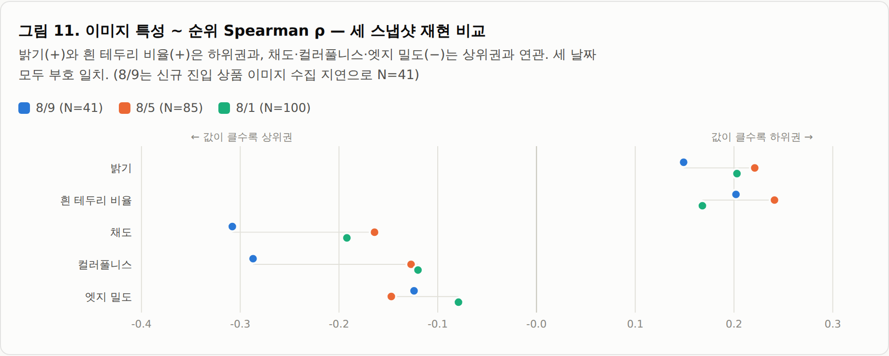
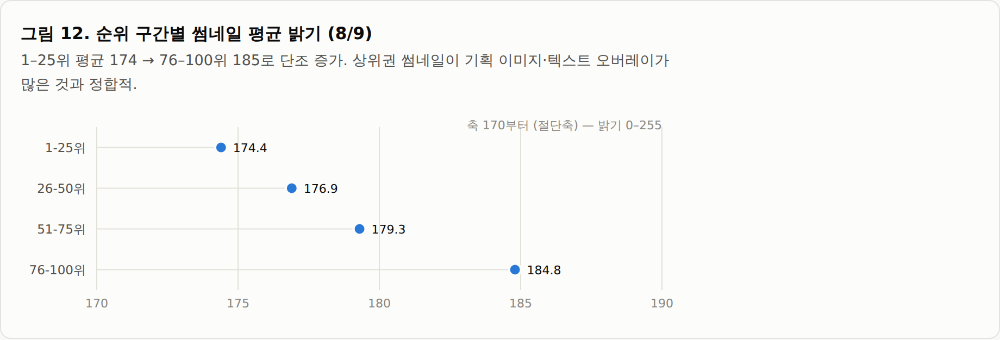
4.6.1 전 기간 패널 재검정 — 무엇이 살아남는가
이미지가 수집 PC 에 확보되어 재검정이 가능해졌다. 썸네일 6,258장에서 저수준 특성을 파일 단위로 한 번만 추출해 캐시하고(추출 실패 0건), 카테고리 패널 8/5~8/18 에 대표이미지URL 기준으로 조인하였다(조인 성공률 99.6%). 검정 사양은 4.4.7과 동일하게 카테고리×일 고정효과와 상품 단위 클러스터 표준오차를 적용하였다.
| 특성 | beta | t (클러스터) | 일별 부호 일치 | 판매변수 통제 후 t |
|---|---|---|---|---|
| 엣지밀도 | −3.86 | −8.16 | 100% | −4.21 |
| 컬러풀니스 | −2.65 | −3.50 | 92% | −1.21 |
| 흰테두리비율 | +1.11 | +2.32 | 92% | +1.38 |
| 채도 | +1.11 | +1.24 | 92% | −0.33 |
| 밝기 | −0.03 | −0.04 | 58% | +0.43 |
표 13. 썸네일 저수준 특성과 순위 (8/5~8/18 카테고리 패널, N=23,896, 카테고리×일 고정효과, 상품 단위 클러스터 표준오차). 판매변수 = 리뷰 유입·규모·가격·할인율
초판이 핵심으로 삼았던 밝기는 재현되지 않는다. 고정효과와 클러스터 표준오차를 적용하면 t=−0.04 로 사라지고, 12일 일별 재추정에서 부호 일치율이 58%로 동전 던지기 수준이다. 단순 Spearman 에서 관측되던 상관은 카테고리 구성 차이를 통제하지 못한 결과로 판단된다.
살아남는 것은 엣지밀도 하나다. t=−8.16 이고 12일 전부 같은 부호이며, 리뷰 유입·규모·가격·할인율을 모두 통제한 뒤에도 유일하게 유의하다(t=−4.21). 엣지밀도는 텍스트 오버레이와 구성 복잡도의 프록시이므로 “상위권 썸네일은 흰 배경의 단품 컷이 아니라 기획 이미지”라는 초판의 서술 방향 자체는 유지된다. 다만 그 근거는 밝기가 아니라 구성 복잡도로 교체되어야 한다. 한편 채도는 컬러풀니스와 공선성이 크므로(VIF 5.12) 둘을 함께 해석해서는 안 된다.
엣지밀도가 무엇을 포착하는지는 실제 썸네일을 보면 분명해진다. 상위 사례는 순위·1위 클레임, 증정 구성 표기, 인플루언서 PICK 배지 같은 텍스트 요소가 한 컷에 겹쳐 있어 경계선이 많다. 반대로 하위 사례는 흰 배경에 제품만 놓인 누끼 컷이다. 즉 엣지밀도는 화면의 밝기나 색이 아니라 “얼마나 많은 정보를 얹었는가”를 재고 있다.
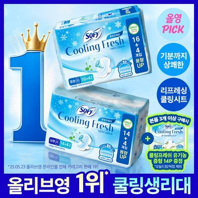

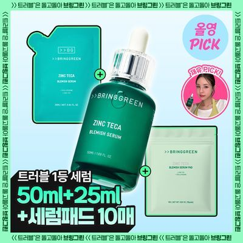
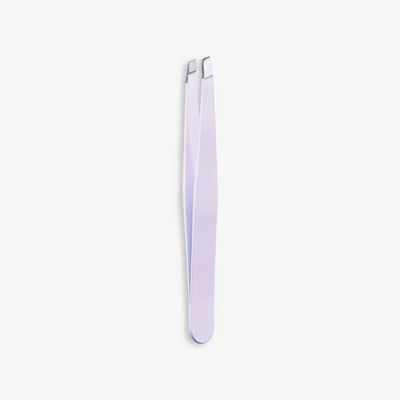
그림 13. 엣지밀도 상·하위 썸네일 예시 (2026-08-18 카테고리 랭킹 기준). 순위는 해당 카테고리 내 순위
4.6.2 썸네일 교체 이벤트
이미지 파일명이 URL 해시라 썸네일이 교체되면 전후 버전이 모두 보존된다. 같은 상품의 대표이미지URL 변경을 교체 이벤트로 보면 상품 내 비교가 되어, 앞의 모든 크로스섹션 분석보다 인과에 가까운 설계가 가능하다. 7/23~8/18 관측에서 교체 이벤트는 1,410건(교체를 겪은 상품 787개)으로 착수 기준을 크게 넘는다. 파일명이 “상품번호 + 2자리 이미지 인덱스” 구조임을 확인하였고, 교체 전후 이미지의 특성값이 사실상 동일한 경우는 0.2%에 그쳐 URL 변경이 실제 시각적 교체를 뜻함이 검증되었다.
| 상대일 | −2 | −1 | 교체일 | +1 | +2 |
|---|---|---|---|---|---|
| ln(순위) 편차 | +0.031 | −0.248 | −0.242 | −0.065 | −0.055 |
표 14. 썸네일 교체 전후 순위 궤적 (균형 패널 257건, 단위 평균을 뺀 ln(순위). 음수 = 그 상품의 평소보다 상위)
교체 전날과 당일에 순위가 평소보다 뚜렷하게 높았다가 되돌아간다. 그러나 이를 썸네일 효과로 읽을 수 없다. 교체일에 쿠폰이 새로 부착된 비율은 17.4%로 비교체일(2.5%)의 7.1배이고, 배지 중 하나라도 새로 붙은 비율은 22.6%로 비교체일(4.4%)의 5.1배다. 썸네일 교체는 프로모션 패키지의 일부로 시행되며, 이 데이터로는 둘을 분리할 수 없다. 4.4.6에서 확인한 쿠폰의 당일 효과와 같은 구조다.
사전 추세도 문제다. 교체 직전 4일의 기울기가 −0.075/일로, 순위가 이미 개선되던 중에 교체가 일어난다. 상승 중인 상품에 교체가 집중된다는 뜻이므로 교체 후 변화를 교체 덕분으로 읽을 수 없다. 따라서 T7의 “상품 내 설계라 인과에 가깝다”는 전제는 이 데이터에서 성립하지 않는다. 다음 단계는 프로모션 변화가 없는 교체(교체일의 77%)만 추려 부분표본으로 재추정하는 것이다.
5종합 결론 및 향후 계획
5.1 분석 결과 요약
- 랭킹은 고변동 시스템이다. 일 평균 42개 상품이 교체되고 월초에는 사실상 리셋된다. 순위 수준뿐 아니라 진입·잔류를 종속변수로 삼는 설계가 필요하다.
- 리뷰 규모의 설명력은 상당 부분 유입 수준의 대리였다. 로그 척도 유입 속도와 함께 넣으면 고유 설명력이 0으로 사라지고, 전기 재고로 바꿔 정의상 중첩을 끊어도 동일하다. 초판의 “규모가 압도적”이라는 결론(표 11)은 유입 속도를 원값으로 투입하고 표준오차를 보정하지 않은 명세의 산물이다. 단 브랜드를 통제하면 규모가 다시 유의해지므로(4.4.7) “규모는 무의미하다”가 아니라 “브랜드 간 비교에서 규모는 브랜드의 대리였다”로 서술해야 한다.
- 랭킹을 설명하는 것은 최근 유입 수준이다. 로그 척도에서 t=−22.4로 강건하고 10일 전부 같은 부호이며, 리뷰 규모 3구간 모두에서 유지된다. 단 이는 “속도·모멘텀”이 아니라 상품 간 수준 차이다 — 시차 상관이 평평하고 상품 내 일간 변화는 무상관(r=−0.005)이다.
- 할인율은 상품 간·상품 내 양쪽에서 유의하다. 같은 카테고리 안에서 할인이 큰 상품일수록 상위권이며(t=−8.2), 같은 상품이 할인을 키운 날에도 순위가 오른다(10%p당 약 30% 개선).
- 랭킹은 판매액(매출)순에 가깝다. 리뷰 유입을 통제해도 가격 탄력성이 −0.36(t=−11.5)으로 살아 있고 유입 탄력성과의 비가 0.85다. 순위는 설명 대상인 동시에 판매의 관측 대리변수로 취급해야 한다.
- 프로모션은 무작위로 배정되지 않는다. 세일 배지는 순위가 떨어진 직후에 부착되고(역인과), 쿠폰은 부착 당일에만 효과가 나타난다. 프로모션 분석에는 사전 추세 확인이 필수다.
- Q2(체험단)는 본문 표기 기반으로는 검증할 수 없다. 탐지 규칙을 4단으로 재설계해 208건에서 489건으로 늘리고 수동 검증에서 정밀도 100%를 확인했으나 탐지율은 0.77%에 그친다. 대가성 리뷰를 보유한 상품이 7.5%뿐이라 회귀에 넣을 분산이 없다. 다만 대가성 리뷰가 소수 브랜드에 집중되므로 브랜드×시점 캠페인 단위 설계가 대안이다.
- 평점은 천장효과로 설명력이 없다. 고정효과 모형에서도 무의미 — 평점 효과 검증은 별점 분포 변수로 재시도해야 한다.
- 브랜드를 통제하면 리뷰 규모가 되살아난다. 브랜드 간 비교에서는 누적 리뷰가 “어느 브랜드인가”의 대리였고(t=−0.5), 같은 브랜드 안에서는 누적 리뷰가 많은 상품이 더 상위권이다(t=−4.1). 유입 속도는 브랜드 통제 후에도 t=−18.6으로 살아남는다. 브랜드 자체가 전체 R²를 0.22에서 0.38로 끌어올린다.
- 표준오차를 상품 단위로 보정하면 t값이 중위 49% 축소된다. 초판 표 11의 t 수치는 이 보정 이전 값이므로 그대로 인용할 수 없다.
- 리뷰 규모는 순위를 올리는 변수가 아니라 자리를 지키게 하는 변수다. 익일 잔류 로지스틱에서 양(+)으로 유의하며(오즈비 1.19), 반대로 할인율은 순위를 올리지만 잔류 확률은 낮춘다(오즈비 0.87).
- 신규 진입 상품의 중위 체류 기간은 1일이다. 43%가 76~100위로 진입하고 3일 생존확률은 0.192에 그친다. 진입 지점이 이후 체류를 강하게 예측한다.
- TOP100의 상시 세력은 31개 전문 브랜드다. 단일 카테고리 전문화, 포트폴리오형/히어로형의 이원 전략, 리뷰 자산형/신흥 할인형의 공존이 확인되었다.
- 썸네일에는 시각적 문법이 있으나 그 근거는 밝기가 아니다. 고정효과와 클러스터 표준오차를 적용하면 밝기 효과는 사라지고(t=−0.04, 일별 부호 일치 58%), 엣지밀도만 강건하게 남는다(t=−8.16, 12일 전부 동일 부호). 리뷰 유입·규모·가격·할인율을 통제한 뒤에도 유의한 유일한 시각 특성이다.
- 썸네일 교체는 프로모션과 함께 일어난다. 교체일의 쿠폰 부착률이 비교체일의 7.1배여서, 교체 전후의 순위 변화를 썸네일 단독 효과로 분리할 수 없다. 교체 이벤트 자체는 1,410건으로 충분히 확보되었다.
- 〔잠정〕 선후관계는 판매 → 리뷰 방향으로 관측된다. 전기 순위가 당기 유입을 예측하는 경로는 강하게 유의하나(t=−23.1), 반대 방향은 시차 종속변수를 제외하면 사라진다(t=+1.38). 랭킹이 판매액순임을 감안하면 리뷰는 판매의 결과에 가깝다. 패널 12일·1일 시차의 한계가 있어 3주치 확보 후 재검정이 필요하다.
5.2 데이터 품질 개선 조치 (완료)
- 체험단여부 저장값 폐기 및 본문 기준 재계산 로직으로 전환 (전처리 단계).
- 리뷰 정렬·페이지 크기의 실측 결과를 반영하여 유입 속도 지표를 velocity_delta로 일원화.
- 전 카테고리 일일 수집 모드(--review-text-overall-only) 도입 및 정착 — 8/5부터 매일 N=2,000 크로스섹션이 축적되어 본 개정판의 패널 분석이 가능해졌다 (종전 로드맵 1단계 조기 달성).
5.3 본분석 로드맵
- 완료(본 개정판): 규모–속도 얽힘 분리(4.4.4), 랭킹 집계 기준 판별(4.4.5), 프로모션 상품 내 효과와 역인과 확인(4.4.6), 브랜드 통제와 표준오차 보정(4.4.7), 진입·잔류 모형(4.4.8). 다음은 별점 분포 변수를 이용한 평점 효과 재검증이다.
- +4주: 동적 패널은 1차 추정을 마쳤으나(4.4.9) 패널 12일·1일 시차의 한계가 있어 3주치 확보 후 더 긴 시차로 재추정한다. 진입/잔류 로지스틱(4.4.8)과 썸네일 교체 이벤트(4.6.2)는 완료했으며, 후자는 프로모션 무변화 부분표본 재추정이 남았다.
- 체험단 고도화(완료): 키워드 8개를 4단 규칙으로 확장하고 무작위 200건 수동 라벨링으로 검증하여 정밀도 100%·탐지율 0.77%를 확인하였다(4.5.1). 본문 표기 기반 Q2 검증은 불가로 결론지었고, 후속은 브랜드×시점 캠페인 단위 설계로 전환한다. LLM 배치 분류는 유료 API 사용이므로 별도 승인 후 검토한다.
- 이미지 고도화(부분 완료): 저수준 특성 뱅크 6,258장 구축과 전 기간 패널 재검정을 완료해 엣지밀도만 강건함을 확인하였다(4.6.1). 교체 이벤트 1,410건도 확보했으나 프로모션과 동반되어 단독 효과 분리가 과제로 남는다(4.6.2). 후속은 프로모션 무변화 교체 부분표본 재추정, 수동 라벨 91장을 300장 이상으로 확대, 한국어 OCR 기반 프로모션 클레임 더미변수화다.
저장소: hdmzp/oliveyoung — 수집기 scraper/, 분석 코드 analysis/(build_dataset.py · crosssection.py · image_features.py · growth.py · sales_frame.py · promo.py · panel.py · survival.py · trial.py · image_bank.py · thumbnail.py · thumbnail_events.py · dynamic_panel.py), 데이터 data/*.csv · data/images/. 본 개정판의 4.4.4~4.4.9, 4.5.1, 4.6.1~4.6.2는 해당 모듈로 재현할 수 있으며 원본 출력은 analysis/output/ 에, 수동 라벨은 analysis/labels/ 에 있다. 본 보고서의 모든 차트는 하단 “표로 보기”로 수치를 확인할 수 있다. 기준일 2026-08-16.